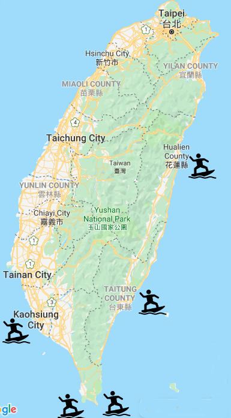

Taiwan

Kenting
Kenting in the south has two surfing spots - Jialeshuei and Nanwan. Both are available all year round and great for beginners. Jialeshuei is just for surfing and less touristy. The surface is rocky and there is no life guard or restrooms. Nanwan's surface is sand and it's also great for swimming. There is a lifeguard, restroom, and plenty of nearby restaurants and surfing shops.

Taitung
The east coast of Taiwan offers mulitple spots for surfing and open water swimming. Two of them are Donghe and Chengong. Donghe - rocky beach, begginer friendly during the summer and bigger waves during the winter thanks to the North-East Monsoon.
Hualien
One hour drive south of Hualien city, there is a surfing spot called Jiqi Beach. The entrance to the ocean is rocky so it can be a bit challenging to beginner surfers.


Kaohsuing
On the west cost there is a hidden surfing spot that is not available all year round. It's inside the National Sun Yat-sen University. It's sandy and doesn't have a lifeguard.